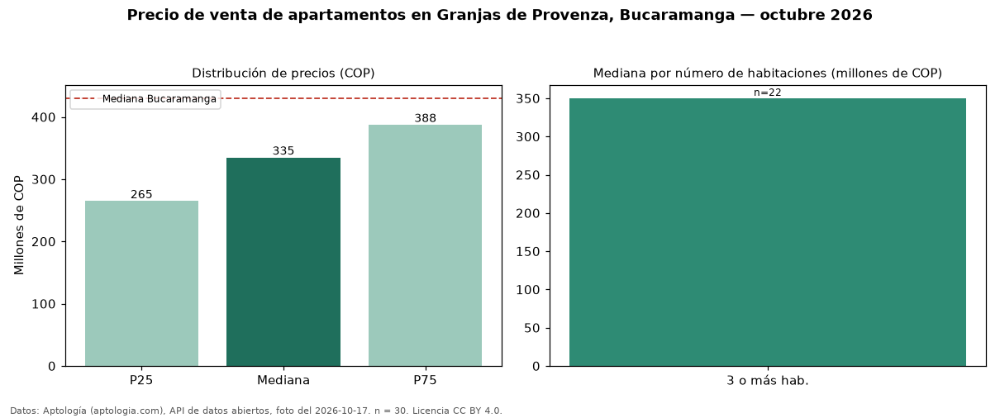

Precio de venta de apartamentos en Granjas de Provenza, Bucaramanga — octubre 2026
Con 30 avisos vigentes, el precio mediano de apartamentos en venta en Granjas de Provenza, Bucaramanga es COP 335 millones. Frente al total de Bucaramanga (COP 430 millones), el barrio está 22 % por debajo. El segmento con más oferta es el de 3 o más habitaciones (22 avisos, mediana COP 350 millones). Por mediana, es el puesto 18 de 26 barrios de Bucaramanga con al menos 30 avisos de apartamentos en venta: en la franja media. 67 % de los avisos incluye parqueadero, y su mediana (COP 348 millones) está 4 % por encima de la general. El aviso más barato pide COP 215 millones y el más caro COP 850 millones. La dispersión es moderada: el cuartil superior (COP 388 millones) es 1,5 veces el inferior (COP 265 millones). Datos: Aptología (aptologia.com), API de datos abiertos, licencia CC BY 4.0 — https://www.aptologia.com/venta/bucaramanga/granjas-de-provenza. Archivos: PDF de 2 páginas, CSV con las cifras y gráfica PNG.

| Avisos únicos | 30 |
|---|---|
| Percentil 25 | COP 265.000.000 |
| Mediana | COP 335.000.000 |
| Percentil 75 | COP 387.500.000 |
Fuente: avisos vigentes de portales inmobiliarios recopilados por Aptología, deduplicados (mínimo 30 avisos únicos por celda). Precios pedidos, no cerrados. Fecha: 2026-10-18.